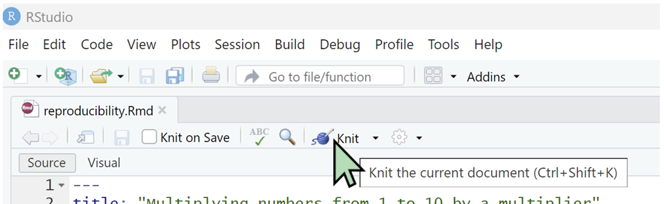
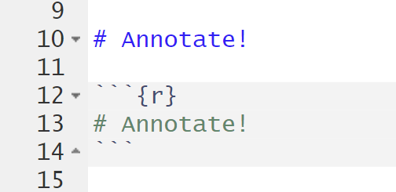

Reproducibility in Action!
Learning Goals
What is reproducibility and why should I care?
4 principles for reproducible research
Bonus!: some activities to refresh your R coding skillsGit and GitHub make it easy to track changes & collaborate
What is Reproducibility?
Doing Research:

Having a Data Management Plan and good habits gets us closer to the ideal :)
Doing reproducible research
Goal: being able to re-create the data and analysis so that you and others can (ideally) arrive at the same interpretations of your results.
So, should we keep everything?

Nobody wants to deal with this!
Reproducibility Principles
Goal: being able to re-create the data and analysis so that you and others can (ideally) arrive at the same interpretations of your results.
Keep everything!
Keep almost everything in such a way that you, or people after you, can (happily?) go back to it.
4 reproducibility principles for achieving this are:
- Annotate: explain what you’re doing and why.
- Automate: make your decisions explicit by using code.
- Share: provide access to your work.
- Hoard: … you will still have to keep almost everything …
1. Annotate

Write explanations for your future collaborators
What? How? Why?!
Habits:
Use script headers, use meaningful & human-readable names, comment your code
Tools:
notebook documents (e.g., R Notebook (.Rmd) files in RStudio)
Exercise 1.
- Open RStudio and create a new R Notebook document.

- Save it, then Knit it to pdf. What does this achieve?

Recall annotate habits: use meaningful & human-readable variable names, comment your code, use script headers.
How do you achieve that?
Type “# Annotate!” both inside and outside of the R code block.
How are these displayed differently after you knit?

- Switch the markdown editing mode from Source to Visual.
What does this do? What new kinds of objects can you now add to your Notebook?

- Modify the header to add new fields for “author:” and “date:”
What other authorship attribution information may be useful?

2. Automate

Avoid manual manipulation
waste of time & error-prone
decisions are not explicit and can be inconsistent
Habits:
use a scripting language for your analyses, find+replace, automatically save parameters in the filename.
Tools:
notebook documents (e.g., R Notebook)
Exercise 2.
The window below contains a function
(get.multiples1to10) that multiplies the integers from 1 to
10 (1:10) by a constant value (multiplier),
which is currently set to 3. So it should print out ten
multiples of 3, from 3 to 30.
Run the code to convince yourself that it’s working properly.
Exercise 3.
The window below contains a buggy version of the same code.
Find the bug and fix it so the code runs properly.
Exercise 4.
Copy and paste the bug-free version of the code below into the R Notebook document that you created in Exercise 1.
# function to multiply integers from 1 to 10 by a parameter value
get.multiples1to10 <- function(multiplier){
numbers <- 1:10
return(multiplier * numbers)
}
# display results for parameter value set to 3
current_value <- 3
results <- get.multiples1to10(multiplier = current_value)
# print results to console
print(results)Use find+replace to change the name of the function from
get.multiples1to10 to a new name that you find more
useful (e.g., easier to type, easier to understand,
unique).
3. Hoard

Keep almost everything
Habits:
store raw data & intermediate steps in data processing, store code & progress on code, backup regularly (daily!), versions of software & packages
Tools:
backup software (e.g., OneDrive is free for UniBE students),
version control (e.g., git), online repositories (e.g., GitHub)
Exercise 5.
It is usually a better idea to write your results to a file rather than just printing them to the console. (Why?)
Return to the R Notebook that you last updated in Exercise 4.
Use this line of code to write your results to a comma
separated values (.csv) file called “myResuts.csv”:
Do you think this is a good filename for your results? Why or why not?
You can store the parameter value in the filename by first using
paste(...) to create a character string called
the_filename.
# create filename for results indicating the parameter value that was used
the_filename <- paste("multiples1to10--multiplier", current_value, ".csv")
print(the_filename)## [1] "multiples1to10--multiplier 3 .csv"Use the_filename to write your results to a csv file
that contains the parameter value in its name.
Do you think this is a better filename for your results? Why or why not?
Bonus Exercise
To maximize your automation and hoarding, you can use a loop to automatically run multiple parameter values and write the results to separate files, each named with its corresponding parameter value.
The code below will loop over three parameter values: 2, 3, and 4.
Figure out how to write the results of each parameter value
to a separate and appropriately named file.
4. Share

Fundamentally, research is about sharing
with collaborators, with other scientists
Habits:
think about your audience when analyzing (see annotate), share early and often
Tools:
online repositories for data (e.g., Dryad), code (e.g., GitHub), and papers (e.g., EcoEvoRxiv)
Summary
- Annotate: explain what you’re doing and why.
- Automate: make your decisions explicit by using code.
- Hoard: keep almost everything.
- Share: provide access to your work.
By implementing these reproducibility principles, your workspace can be more like this: